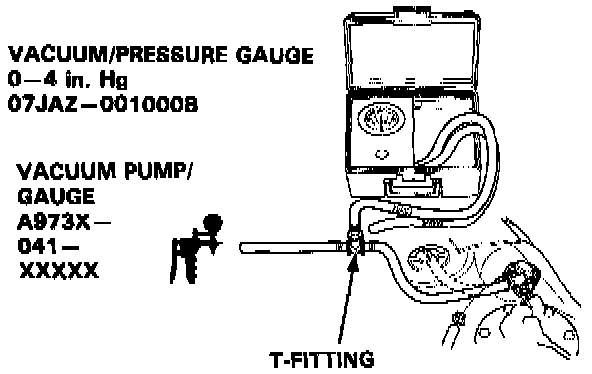
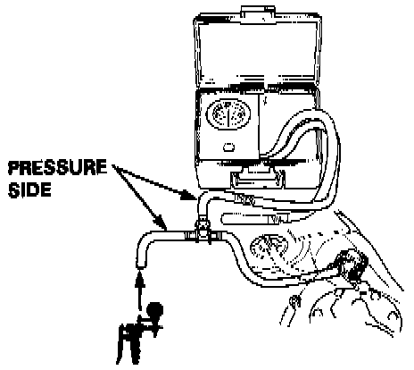

Evaporative Check Valve: Testing and Inspection
INSPECTION1. Remove the fuel fill cap.

2. Remove vapor line from the fuel tank and connect to fitting from vacuum gauge and vacuum pump as shown.
3. Apply vacuum slowly and continuously while watching the gauge.
- Vacuum should stabilize momentarily at 5 to 15 mmHg (0.2 to 0.6 in. Hg).
- If vacuum stabilizes (valve opens) below 5 mmHg (0.2 in. Hg) or above 15 mmHg (0.6 in. Hg), install new valve and retest.

4. Move vacuum pump hose from vacuum to pressure fitting, and move vacuum gauge hose from vacuum to pressure side as shown.
5. Slowly pressurize the vapor line while watching the gauge.
- Pressure should stabilize at 10 to 35 mmHg (0.4 to 1.4 in. Hg).
- If pressure momentarily stabilizes (valve opens) at 10 to 35 mmHg (0.4 to 1.4 in. Hg), the valve is 0K.
- If pressure stabilizes below 10 mmHg (0.4 in. Hg) or above 35 mmHg (1.4 in. Hg), install a new valve and retest.